<meta charset="utf-8"><title>11/27のコラム note貼り付け</title>
<style>
/* one column of numbered paste steps; text steps vs image steps differ by marker */
:root{--bg:#F5F4F0;--card:#FFFFFF;--ink:#1D2321;--mute:#5F665F;--line:#DCDAD2;--btn:#1F5FBF;--btnok:#2E8B4F;--img:#E9F3EC;--imgink:#22663B;--sans:'IBM Plex Sans JP','Hiragino Sans','Noto Sans JP',sans-serif}
@media (prefers-color-scheme:dark){:root:not([data-theme="light"]){--bg:#171A19;--card:#202423;--ink:#ECEDE8;--mute:#A3AAA2;--line:#343937;--btn:#4D8BE6;--btnok:#3FA866;--img:#1E2C23;--imgink:#8FD3A6;color-scheme:dark}}
:root[data-theme="dark"]{--bg:#171A19;--card:#202423;--ink:#ECEDE8;--mute:#A3AAA2;--line:#343937;--btn:#4D8BE6;--btnok:#3FA866;--img:#1E2C23;--imgink:#8FD3A6;color-scheme:dark}
body{background:var(--bg);color:var(--ink);font-family:var(--sans);font-size:15px;line-height:1.75;padding:20px 16px 60px}
main{max-width:680px;margin:0 auto;display:grid;gap:28px}
header h1{font-size:22px;margin:0 0 6px;text-wrap:balance}
header p{margin:0;color:var(--mute);font-size:14px}
nav{display:flex;gap:8px;flex-wrap:wrap;margin-top:12px}
nav a{border:1px solid var(--line);border-radius:999px;padding:4px 14px;color:var(--ink);text-decoration:none;font-size:14px;background:var(--card)}
.part h2{font-size:18px;line-height:1.5;margin:0 0 12px;text-wrap:balance;display:flex;gap:10px;align-items:baseline;flex-wrap:wrap}
.tag{font-size:13px;background:var(--ink);color:var(--bg);border-radius:6px;padding:1px 9px}
.steps{list-style:none;margin:0;padding:0;display:grid;gap:12px}
.st{background:var(--card);border:1px solid var(--line);border-radius:12px;padding:12px;min-width:0}
.hd{display:flex;align-items:center;gap:8px;margin-bottom:8px}
.no{width:26px;height:26px;border-radius:50%;background:var(--btn);color:#fff;display:inline-flex;align-items:center;justify-content:center;font-size:13px;font-weight:700;flex:0 0 26px}
.im .no{background:var(--btnok)}
.hd em{font-style:normal;font-size:12px;background:var(--img);color:var(--imgink);border-radius:6px;padding:0 8px}
.bx{font-size:13.5px;line-height:1.7;border:1px solid var(--line);border-radius:8px;padding:8px 10px;max-height:110px;overflow:auto;overflow-wrap:anywhere}
.bx.tall{max-height:150px}.bx p{margin:0 0 6px}.bx h2{font-size:14px;margin:8px 0 4px}.bx a{color:var(--btn)}
.st img{display:block;width:100%;max-width:100%;border:1px solid var(--line);border-radius:8px}
.sub{font-size:12.5px;color:var(--mute);margin:6px 0 0}
.cp{width:100%;margin-top:8px;padding:12px;border:0;border-radius:10px;background:var(--btn);color:#fff;font:600 15px var(--sans);cursor:pointer}
.cp.ok{background:var(--btnok)}.cp.dl{background:var(--btnok)}.cp:focus-visible{outline:3px solid var(--ink);outline-offset:2px}
.xh{font-size:15px;margin:20px 0 10px}
.fb{font-size:13px;line-height:1.7;margin:8px 0 0;padding:8px 10px;border-radius:8px;background:var(--img);color:var(--imgink)}
.opts{display:grid;grid-template-columns:repeat(auto-fill,minmax(240px,1fr));gap:10px}
.opt{min-width:0}.opt img{display:block;width:100%;border:1px solid var(--line);border-radius:8px}
.ol{display:flex;align-items:center;gap:8px;margin-top:6px}.ol b{font-size:13px;flex:0 0 auto}.ol .on{font-size:12.5px;color:var(--mute);flex:1;min-width:0}.ol .cp{width:auto;flex:0 0 auto;padding:9px 14px}.ol .cp{margin:0;padding:9px}
.toast{font-size:13px;color:var(--mute);margin-top:6px}
</style>
<main><header><h1>11/27のコラム note貼り付け</h1><p>いま公開済みは7本です。青い番号は文章、緑は画像です。</p><nav><a href="#p1">1</a><a href="#p2">2</a><a href="#p3">3</a><a href="#p4">4</a><a href="#p5">5</a><a href="#p6">6</a><a href="#p7">7</a></nav></header><section class="part" id="p1"><h2><span class="tag">OFF GRID</span>カタールのストレートモードは4区間　ターン12の前で翼を戻す</h2><p class="sub">サイトに公開：02:02</p><ol class="steps">
<li class="st im"><div class="hd"><span class="no">1</span><b>見出し画像</b><em>画像</em></div>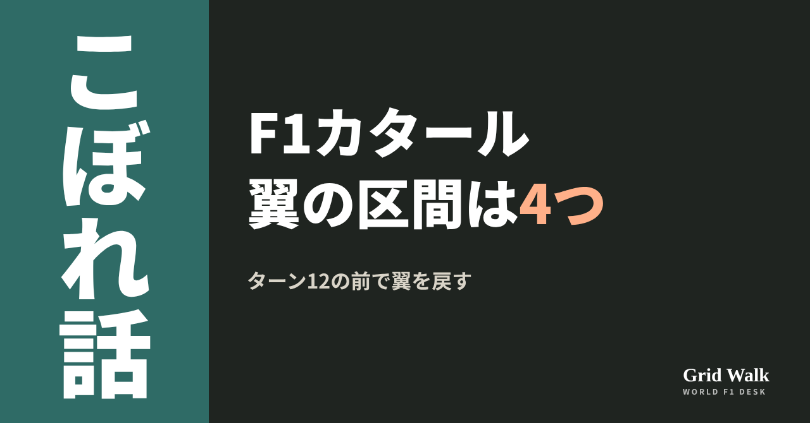<button class="cp dl" data-img="img/qatar-straight-mode-zones-20261127.png" data-name="qatar-straight-mode-zones-20261127_見出し画像.png">ダウンロード</button></li>
<li class="st"><div class="hd"><span class="no">2</span><b>タイトル</b></div><div class="bx" id="p1t">カタールのストレートモードは4区間　ターン12の前で翼を戻す</div><button class="cp" data-plain="p1t">タイトルをコピー</button></li>
<li class="st"><div class="hd"><span class="no">3</span><b>本文</b></div><div class="bx tall" id="p1r"><p>カタールのルサイルで翼を寝かせてよい区間は、4つ。FIAが今週末の第22戦カタールGPについて、アクティブエアロのストレートモードを使える区間を決めました。ただし、右へ大きく回り込むコーナーが続くターン12の手前では、翼をふつうの形に戻さなければなりません。イギリスのPlanetF1が11月26日に伝えています。</p><p>4区間の場所と、区間の決め方の解説へのリンクはサイトで → <a href="https://f1gridwalk.github.io/lens/qatar-straight-mode-zones-20261127/?utm_source=note&amp;utm_campaign=qatar-straight-mode-zones-20261127">https://f1gridwalk.github.io/lens/qatar-straight-mode-zones-20261127/?utm_source=note&amp;utm_campaign=qatar-straight-mode-zones-20261127</a></p><p>2026年の車は、走りながら翼の角度を変えられます。PlanetF1の説明では、直線では翼を開いて空気抵抗を減らし、コーナーでは前後の翼を閉じて、車を路面に押しつける力を得ます。翼を開いた形のストレートモードを使えるのは、FIAがコースごとに決めた区間の中だけです。仕組みは用語集 https://f1gridwalk.github.io/deep/rules/straight-corner-mode/ と https://f1gridwalk.github.io/deep/rules/active-aero/ に、サイトの要約は https://f1gridwalk.github.io/news/en-planetf1-qatar-straight-mode-zones/ にあります。</p><h2>4区間は1周のどこにあるのか</h2><p>PlanetF1によると、1つ目の区間は、最終コーナーのターン16を出てすぐに始まり、スタートとフィニッシュの直線を走ります。2つ目は、ターン3とターン4の間の直線です。</p><p>そのあと第2セクターでは、しばらく翼を開けません。3つ目の区間はターン10の立ち上がりから使えるようになり、まっすぐに近いターン11を通り抜けます。ターン12に近づく前には、翼をふつうの形に戻します。PlanetF1は、ターン12から右へ大きく回り込むコーナーが続くと書いています。</p><p>4つ目は、ターン15とターン16の間の直線です。ターン16を回れば、またホームストレートの1つ目の区間に入ります。</p><p>追い抜きを助けるオーバーテイクモードは、別の仕組みです。PlanetF1によると、検知点はターン16を出たところにあり、作動点はそのすぐ先です。ここで前の車の1秒以内にいれば、追う車は0.5MJの電気を余分に使えます（ https://f1gridwalk.github.io/deep/rules/overtake-mode/ ）。</p><h2>去年のDRSは1区間だった</h2><p>去年はどうだったのか。FIAの2025年のコース地図では、DRSの区間は、ターン16の305m先から始まる1つだけです。区間の数でいえば1つから4つになりますが、同じものを比べているわけではありません。DRSは後ろの翼の板を開く仕組みで、決勝では前の車の1秒以内にいる車しか使えませんでした（練習走行と予選では全車が使えました）。ストレートモードは、決勝でも前の車との差に関係なく全車が使えます（ https://f1gridwalk.github.io/deep/rules/drs/ ）。追う車だけを助ける役目は、オーバーテイクモードに移りました。</p><p>PlanetF1の一覧では、今季の区間の数は、モナコの0から、オーストラリア、ベルギー、シンガポールの5まで。カタールと同じ4区間には、中国、バルセロナ、オーストリア、イギリス、ハンガリー、イタリア、バーレーンが並びます。</p><h2>高速コーナーが続くルサイル</h2><p>F1公式によると、ルサイル・インターナショナル・サーキットは1周5.419km、決勝は57周で、F1の初開催は2021年です。PlanetF1は、休みなく続く高速コーナーがピレリのタイヤを苦しめる、今季でも指折りの厳しいコースだと書いています。今年のタイヤの周回数の上限は、コラム https://f1gridwalk.github.io/lens/qatar-tyre-stint-limit-20261121/ で。FIAが区間をどんな物差しで選ぶのかは、DEEP GRID https://f1gridwalk.github.io/deep/straight-mode-zones/ にまとめています。</p><p>編集部としては、ターン12の手前で翼を戻す決まりに、このコースらしさが出ていると見ています。ターン10の立ち上がりからターン11までを翼を寝かせて走り、右へ回り込むコーナーに入る前に戻す。その切り替えのところで車が落ち着いているかどうかが、金曜の練習走行の見どころの一つになりそうです。</p><p><strong>ほぼまっすぐのターン11までふくめた、ルサイルの4区間。あなたは、翼を寝かせる区間はもっと増やしてよいと思いますか？</strong></p><p>━━━━━━━━━━</p><p><strong>F1 Grid Walk では、世界のF1ニュースを毎日日本語でまとめています。</strong></p><p>海外の記事の要約を、毎日載せています。</p><p><a href="https://f1gridwalk.github.io/">https://f1gridwalk.github.io/</a></p><p>ほかの海外記事も読みたい方は、F1 Grid Walkへ。</p><p><a href="https://f1gridwalk.github.io/lens/qatar-straight-mode-zones-20261127/">https://f1gridwalk.github.io/lens/qatar-straight-mode-zones-20261127/</a></p><p>━━━━━━━━━━</p><p><a href="https://www.planetf1.com/news/fia-qatar-grand-prix-2026">出典：PlanetF1（イギリス）</a></p><p><a href="https://www.fia.com/system/files/decision-document/2025_lusail_event_-_circuit_map_-_qatar_2025.pdf">出典：FIA（国際）</a></p><p><a href="https://www.formula1.com/en/racing/2026/qatar/circuit">出典：F1公式サイト（イギリス）</a></p><p><a href="https://www.formula1.com/en/racing/2026">出典：F1公式サイト（イギリス）</a></p></div><button class="cp" data-rich="p1r">本文をコピー</button></li>
<li class="st"><div class="hd"><span class="no">4</span><b>ハッシュタグ</b></div><div class="bx" id="p1h">#F1 #F1jp #カタールGP #ルサイル #FIA #アクティブエアロ #ストレートモード #F1こぼれ話 #OFFGRID</div><button class="cp" data-plain="p1h">タグをコピー</button></li>
</ol><h3 class="xh">X</h3><ol class="steps">
<li class="st im"><div class="hd"><b>X用の画像</b><em>画像</em></div>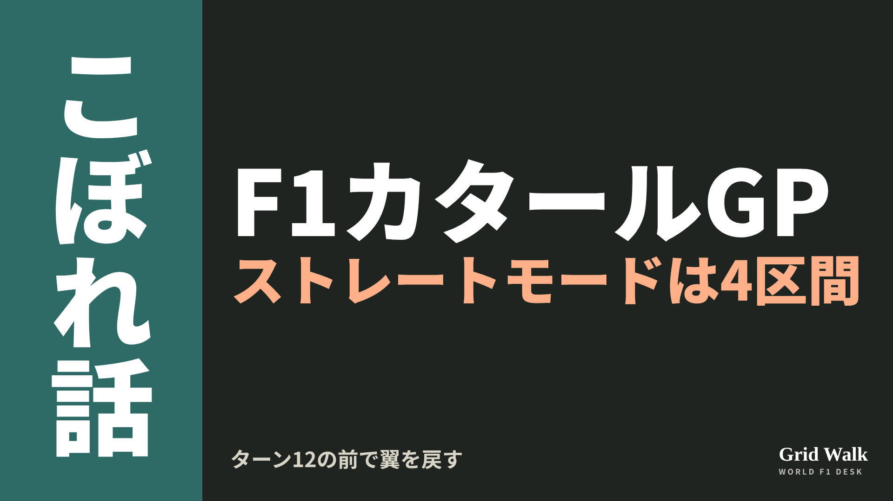<button class="cp dl" data-img="img/x_qatar-straight-mode-zones-20261127.png" data-name="x_qatar-straight-mode-zones-20261127.png">ダウンロード</button></li>
<li class="st"><div class="hd"><b>① noteをシェアするときの文</b></div><div class="bx" id="p1x0">カタールGPのストレートモード区間は4か所。FIAが確定したと英PlanetF1が伝えました。右へ回り込むコーナーが続くターン12の前で、翼を戻さなければなりません。noteにまとめました #F1jp #カタールGP</div><button class="cp" data-plain="p1x0">コピー</button></li>
<li class="st"><div class="hd"><b>② ①への返信</b></div><div class="bx" id="p1x1">ほかの海外記事も読みたい方は、F1 Grid Walkへ。
https://f1gridwalk.github.io/lens/qatar-straight-mode-zones-20261127/?utm_source=x&amp;utm_campaign=qatar-straight-mode-zones-20261127</div><button class="cp" data-plain="p1x1">コピー</button></li>
<li class="st"><div class="hd"><b>③ ②への返信</b></div><div class="bx" id="p1x2">毎日の海外F1ニュースは、日本語でこちらにまとめています。
https://f1gridwalk.github.io/</div><button class="cp" data-plain="p1x2">コピー</button></li>
</ol></section><section class="part" id="p2"><h2><span class="tag">OFF GRID</span>早すぎるピットは3ストップの罠　マクラーレン技術者がカタールを読む</h2><p class="sub">サイトに公開：02:00</p><ol class="steps">
<li class="st im"><div class="hd"><span class="no">1</span><b>見出し画像</b><em>画像</em></div>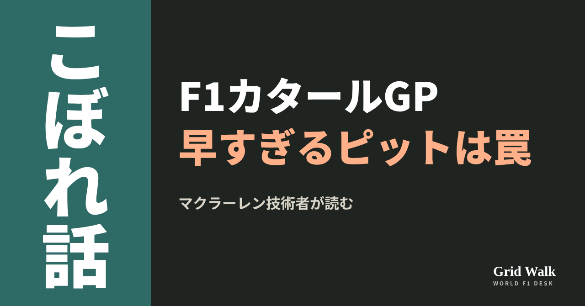<button class="cp dl" data-img="img/qatar-three-stop-trap-20261127.png" data-name="qatar-three-stop-trap-20261127_見出し画像.png">ダウンロード</button></li>
<li class="st"><div class="hd"><span class="no">2</span><b>タイトル</b></div><div class="bx" id="p2t">早すぎるピットは3ストップの罠　マクラーレン技術者がカタールを読む</div><button class="cp" data-plain="p2t">タイトルをコピー</button></li>
<li class="st"><div class="hd"><span class="no">3</span><b>本文</b></div><div class="bx tall" id="p2r"><p>カタールGPの決勝で、いちばん高くつく失敗は何か。マクラーレンのレースエンジニア、エイドリアン・グッドウィンは、チームが出した事前の資料で、早すぎるピットインを挙げました。ドイツのMotorsport-Total.comが11月26日に伝えています（記事はformel1.deに掲載）。</p><p>周回の上限のルールブックと、上限が決まった経緯のコラム、元の記事へのリンクはサイトで → <a href="https://f1gridwalk.github.io/lens/qatar-three-stop-trap-20261127/?utm_source=note&amp;utm_campaign=qatar-three-stop-trap-20261127">https://f1gridwalk.github.io/lens/qatar-three-stop-trap-20261127/?utm_source=note&amp;utm_campaign=qatar-three-stop-trap-20261127</a></p><blockquote><p>「作戦でいちばん大事なのは、3回ストップのレースに追い込まれるほど早くピットに入らないことだ」（グッドウィン、Motorsport-Total.com／ドイツ）</p></blockquote><p>ルサイルでは今年もタイヤ1セットで走れる周回に上限があり、27周までです。決勝は57周なので、どの車も少なくとも2回はピットに入ります。決まりのしくみはルールブック https://f1gridwalk.github.io/deep/rules/tyre-stint-limit/ に、上限が決まった経緯はコラム https://f1gridwalk.github.io/lens/qatar-tyre-stint-limit-20261121/ にあります。サイトの要約は https://f1gridwalk.github.io/news/de-motorsport-total-mclaren-qatar-strategy-trap/ で。</p><h2>2回で走るなら、最短で3周目</h2><p>27周のスティントを2本つなぐと54周。残りは3周なので、2回のストップで走りきれるいちばん早いピットは3周目になります。それも、あとの2セットがどちらも新品のときだけです。</p><p>落とし穴は土曜日にもあります。練習走行と予選では、走り始めた周は最後まで走らなくても1周と数えられます。決勝用に取っておいたセットで予選にアウトラップを1周走っただけでも、日曜に使える周回が減り、1回目のピットの窓が後ろにずれる、と記事は説明しています。</p><h2>1回ストップの考え方は捨てる</h2><blockquote><p>「57周のレースでは、もう1回ストップで最良のスティントのペースを出す計画は立てなくていい。それより、どのタイヤが最良の短いスティントを3本くれるかを見つけることだ」（グッドウィン、Motorsport-Total.com／ドイツ）</p></blockquote><p>決勝のためにどのタイヤを残すかも見極めどころだといいます。今年のカタールはスプリントの週末ではなく、去年の12セットに代わって、各ドライバーにはスリックが13セット（ハード2、ミディアム3、ソフト8）配られます。新品を日曜に残す余地は広がると記事は書いています。</p><p>涼しい気温と、2026年のクルマのコーナー速度の低さで、タイヤへの負担は例年より小さいとグッドウィンは見ています。</p><blockquote><p>「スティントの長さが決まっているので、タイヤにとってはむしろ簡単なイベントになる。寿命の先まで持たせようとしなくていいからだ」（グッドウィン、Motorsport-Total.com／ドイツ）</p></blockquote><h2>去年の7周目</h2><p>マクラーレンには苦い記憶があります。記事によると、去年は7周目にセーフティカーが出て、ほとんどの車が1回目のタイヤ交換に入りました。外に残ったのはランド・ノリスとオスカー・ピアストリだけで、その判断が勝ちをマックス・フェルスタッペンに渡したと記事は書いています。F1公式の結果では、勝ったのはフェルスタッペンで、ピアストリは2位、ノリスは4位でした。</p><blockquote><p>「レースの条件で、少なくとも4回のピットストップをこなすことになるのはわかっている。それでも、ドライバーと一緒に、タイヤからいちばんいいペースを引き出す作業は要る」（グッドウィン、Motorsport-Total.com／ドイツ）</p></blockquote><p>F1公式の順位では、コンストラクターズ3位のレッドブルが440点、4位のマクラーレンが431点。差は9点で、残りは2戦です。</p><p>編集部としては、今年の分かれ目は日曜より前、予選で決勝用のタイヤを何周使ったかにありそうだと見ています。アウトラップ1周でピットの窓が後ろにずれるなら、決勝の作戦の幅は、土曜日のうちに削られているかもしれないからです。</p><p><strong>予選で決勝用のセットに1周も使わず残すか、使ってでもグリッドを上げにいくか。カタールでのこの判断、あなたならどうしますか？</strong></p><p>━━━━━━━━━━</p><p><strong>F1 Grid Walk では、世界のF1ニュースを毎日日本語でまとめています。</strong></p><p>海外の記事の要約を、毎日載せています。</p><p><a href="https://f1gridwalk.github.io/">https://f1gridwalk.github.io/</a></p><p>ほかの海外記事も読みたい方は、F1 Grid Walkへ。</p><p><a href="https://f1gridwalk.github.io/lens/qatar-three-stop-trap-20261127/">https://f1gridwalk.github.io/lens/qatar-three-stop-trap-20261127/</a></p><p>━━━━━━━━━━</p><p><a href="https://www.formel1.de/news/grand-prix-berichte/2026-11-26/mclaren-ingenieur-erklaert-strategie-falle-in-katar-welcher-fehler-jetzt-teuer-wird">出典：Formel1.de（元はMotorsport-Total.com）（ドイツ）</a></p><p><a href="https://www.formula1.com/en/results/2025/races/1275/qatar/race-result">出典：F1公式サイト（イギリス）</a></p><p><a href="https://www.formula1.com/en/results/2026/team">出典：F1公式サイト（イギリス）</a></p><p><a href="https://www.formula1.com/en/racing/2026">出典：F1公式サイト（イギリス）</a></p></div><button class="cp" data-rich="p2r">本文をコピー</button></li>
<li class="st"><div class="hd"><span class="no">4</span><b>ハッシュタグ</b></div><div class="bx" id="p2h">#F1 #F1jp #カタールGP #マクラーレン #タイヤ #ピットストップ #ノリス #ピアストリ #F1こぼれ話 #OFFGRID</div><button class="cp" data-plain="p2h">タグをコピー</button></li>
</ol><h3 class="xh">X</h3><ol class="steps">
<li class="st im"><div class="hd"><b>X用の画像</b><em>画像</em></div>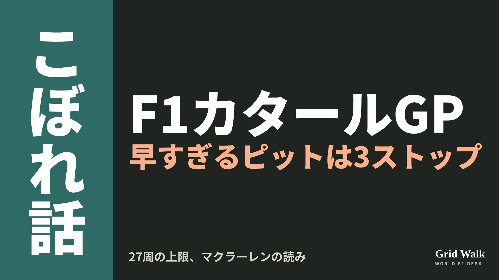<button class="cp dl" data-img="img/x_qatar-three-stop-trap-20261127.png" data-name="x_qatar-three-stop-trap-20261127.png">ダウンロード</button></li>
<li class="st"><div class="hd"><b>① noteをシェアするときの文</b></div><div class="bx" id="p2x0">1セット27周までのカタール。57周を2回のピットで走るには、早く入りすぎないことが鍵だとマクラーレンのレースエンジニアが説明しています。noteにまとめました #F1jp #カタールGP #マクラーレン</div><button class="cp" data-plain="p2x0">コピー</button></li>
<li class="st"><div class="hd"><b>② ①への返信</b></div><div class="bx" id="p2x1">ほかの海外記事も読みたい方は、F1 Grid Walkへ。
https://f1gridwalk.github.io/lens/qatar-three-stop-trap-20261127/?utm_source=x&amp;utm_campaign=qatar-three-stop-trap-20261127</div><button class="cp" data-plain="p2x1">コピー</button></li>
<li class="st"><div class="hd"><b>③ ②への返信</b></div><div class="bx" id="p2x2">毎日の海外F1ニュースは、日本語でこちらにまとめています。
https://f1gridwalk.github.io/</div><button class="cp" data-plain="p2x2">コピー</button></li>
</ol></section><section class="part" id="p3"><h2><span class="tag">OFF GRID</span>ハミルトン、ベッテルの指摘に「そうは思わない」　今のフェラーリを語る</h2><p class="sub">サイトに公開：01:58</p><ol class="steps">
<li class="st im"><div class="hd"><span class="no">1</span><b>見出し画像</b><em>画像</em></div>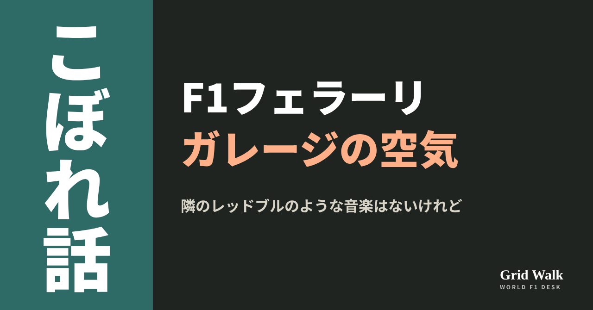<button class="cp dl" data-img="img/hamilton-vettel-garage-mood-20261127.png" data-name="hamilton-vettel-garage-mood-20261127_見出し画像.png">ダウンロード</button></li>
<li class="st"><div class="hd"><span class="no">2</span><b>タイトル</b></div><div class="bx" id="p3t">ハミルトン、ベッテルの指摘に「そうは思わない」　今のフェラーリを語る</div><button class="cp" data-plain="p3t">タイトルをコピー</button></li>
<li class="st"><div class="hd"><span class="no">3</span><b>本文</b></div><div class="bx tall" id="p3r"><p>フェラーリのルイス・ハミルトンが、セバスチャン・ベッテルの語るフェラーリ像に、同意しませんでした。オランダのRacingNews365が11月26日に伝えています。</p><p>ベッテルのフェラーリ時代を扱ったコラムと、元の記事の要約はサイトで → <a href="https://f1gridwalk.github.io/lens/hamilton-vettel-garage-mood-20261127/?utm_source=note&amp;utm_campaign=hamilton-vettel-garage-mood-20261127">https://f1gridwalk.github.io/lens/hamilton-vettel-garage-mood-20261127/?utm_source=note&amp;utm_campaign=hamilton-vettel-garage-mood-20261127</a></p><blockquote><p>「そうは思わない」（ハミルトン、RacingNews365／オランダ）</p></blockquote><p>発端は、ドイツの公共放送ARDのドキュメンタリー、Being Sebastian Vettelです（Formula1.it／イタリア）。RacingNews365によると、ベッテルは番組で、在籍当時は結果を求める大きな重圧のせいで、メカニックは楽しむことを許されなかったと話しました。Formula1.itは、ベッテルがメカニックのためにオーディオを買ったが、上層部は当初反対したと書いています。番組の話はコラム https://f1gridwalk.github.io/lens/vettel-ferrari-fear-20261029/ に。</p><h2>隣のレッドブルのような音楽はないけれど</h2><p>番組にはハミルトン自身も登場しています。フェラーリで2年目のハミルトンは、こう続けました。</p><blockquote><p>「僕はほかに2つのチームにいたけど、雰囲気は似ていると思う」「みんなただ集中していて、ものすごく勝ちたがっている」「集中と情熱は、これ以上ないくらい高いと思う」（ハミルトン、RacingNews365／オランダ）</p></blockquote><p>音楽の話には、隣のレッドブルのガレージを引き合いに、冗談まじりに答えています。</p><blockquote><p>「僕たちのガレージには、大音量の音楽を流すスピーカーはない」「でも、いい雰囲気で、前向きなエネルギーがあると思う」（ハミルトン、RacingNews365／オランダ）</p></blockquote><h2>去年より今年は楽しい</h2><blockquote><p>「今年は、もちろんずっと楽しんでいると思う」「去年は僕たちの誰にとっても、あまり楽しくなかった。でも、長い道のりを進んできた」（ハミルトン、RacingNews365／オランダ）</p></blockquote><p>F1公式によると、フェラーリはラスベガスGPを終えてコンストラクターズ2位、517点です。3位レッドブルとは77点、4位マクラーレンとは86点の差で、残りはカタールとアブダビの2戦です。</p><blockquote><p>「僕たちはコンストラクターズの2位を争っている」「本当に長い道のりを進んできたし、これはまだ始まりにすぎない。この先、まだまだたくさんある」（ハミルトン、RacingNews365／オランダ）</p></blockquote><p>一方でRacingNews365は、ハミルトンとシャルル・ルクレールの間にはラスベガスGPをふくめて張りつめた場面があり、チームのまとまりは揺らいでいるようだとも書いています。2人の接触はコラム https://f1gridwalk.github.io/lens/ferrari-leclerc-hamilton-contact-20261122/ で。</p><h2>別の人たちが率いたフェラーリ</h2><p>Formula1.itのダニエレ・ムスカレッラ記者は、フェラーリがつまずくたびに関係者やかつてF1にいた人たちまでが有害な職場だと言い立てる、と書きます。そのうえで、勝つ組織を知る7度の王者の見方として、ハミルトンの答えを「僕はそうは見ていない」と伝えました。</p><p>記者は、移籍1年目にチームのやり方を公に批判したハミルトンだからこそ、言葉に重みがあると見ています。ベッテルの記憶は別の人たちが率いたフェラーリの話で、チームは変わったのかもしれない、というのが結論です。ベッテルの11月の発言はコラム https://f1gridwalk.github.io/lens/vettel-ferrari-courage-20261126/ に。</p><p>編集部としては、2人の話は食い違っているようで、実は別の時代のフェラーリを語っていると見ています。ベッテルが走ったのは2020年まで、ハミルトンが知っているのは2025年からのチームです。空気の良さを外から確かめる手がかりは、残り2戦の戦い方になりそうです。</p><p><strong>職場の空気の良さは、何で決まると思いますか？ 音楽のような楽しさですか、それとも結果ですか？</strong></p><p>━━━━━━━━━━</p><p><strong>F1 Grid Walk では、世界のF1ニュースを毎日日本語でまとめています。</strong></p><p>海外の記事の要約を、毎日載せています。</p><p><a href="https://f1gridwalk.github.io/">https://f1gridwalk.github.io/</a></p><p>ほかの海外記事も読みたい方は、F1 Grid Walkへ。</p><p><a href="https://f1gridwalk.github.io/lens/hamilton-vettel-garage-mood-20261127/">https://f1gridwalk.github.io/lens/hamilton-vettel-garage-mood-20261127/</a></p><p>━━━━━━━━━━</p><p><a href="https://racingnews365.nl/hamilton-niet-eens-met-ferrari-claim-vettel">出典：RacingNews365（オランダ）</a></p><p><a href="https://www.formula1.it/news/34240/1/ferrari-tutti-a-sparare-sulla-rossa-ma-hamilton-non-ci-sta">出典：Formula1.it（イタリア）</a></p><p><a href="https://www.formula1.com/en/results/2026/team">出典：F1公式サイト（イギリス）</a></p><p><a href="https://www.formula1.com/en/racing/2026">出典：F1公式サイト（イギリス）</a></p></div><button class="cp" data-rich="p3r">本文をコピー</button></li>
<li class="st"><div class="hd"><span class="no">4</span><b>ハッシュタグ</b></div><div class="bx" id="p3h">#F1 #F1jp #ハミルトン #ベッテル #フェラーリ #ドキュメンタリー #カタールGP #F1こぼれ話 #OFFGRID</div><button class="cp" data-plain="p3h">タグをコピー</button></li>
</ol><h3 class="xh">X</h3><ol class="steps">
<li class="st im"><div class="hd"><b>X用の画像</b><em>画像</em></div>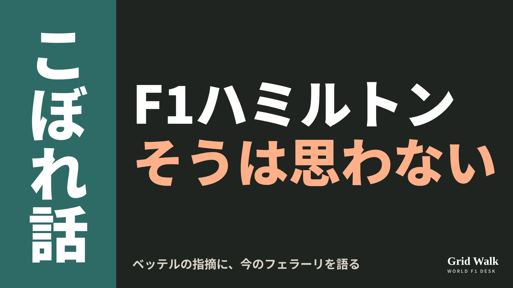<button class="cp dl" data-img="img/x_hamilton-vettel-garage-mood-20261127.png" data-name="x_hamilton-vettel-garage-mood-20261127.png">ダウンロード</button></li>
<li class="st"><div class="hd"><b>① noteをシェアするときの文</b></div><div class="bx" id="p3x0">フェラーリのガレージは重圧で楽しめなかった、というベッテルの話について、ハミルトンは「そうは思わない」。今のチームの空気を語りました。noteにまとめました #F1jp #ハミルトン #フェラーリ</div><button class="cp" data-plain="p3x0">コピー</button></li>
<li class="st"><div class="hd"><b>② ①への返信</b></div><div class="bx" id="p3x1">ほかの海外記事も読みたい方は、F1 Grid Walkへ。
https://f1gridwalk.github.io/lens/hamilton-vettel-garage-mood-20261127/?utm_source=x&amp;utm_campaign=hamilton-vettel-garage-mood-20261127</div><button class="cp" data-plain="p3x1">コピー</button></li>
<li class="st"><div class="hd"><b>③ ②への返信</b></div><div class="bx" id="p3x2">毎日の海外F1ニュースは、日本語でこちらにまとめています。
https://f1gridwalk.github.io/</div><button class="cp" data-plain="p3x2">コピー</button></li>
</ol></section><section class="part" id="p4"><h2><span class="tag">OFF GRID</span>フェラーリCEO「2人のドライバーは仲直りした」　火花を問われ</h2><p class="sub">サイトに公開：01:56</p><ol class="steps">
<li class="st im"><div class="hd"><span class="no">1</span><b>見出し画像</b><em>画像</em></div>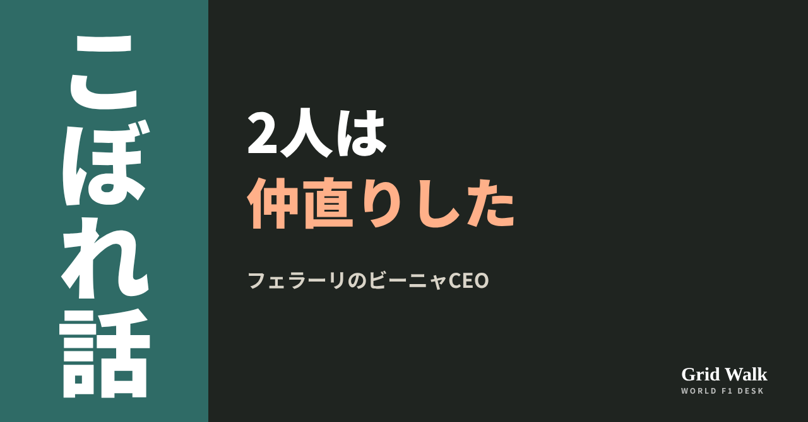<button class="cp dl" data-img="img/vigna-leclerc-hamilton-peace-20261127.png" data-name="vigna-leclerc-hamilton-peace-20261127_見出し画像.png">ダウンロード</button></li>
<li class="st"><div class="hd"><span class="no">2</span><b>タイトル</b></div><div class="bx" id="p4t">フェラーリCEO「2人のドライバーは仲直りした」　火花を問われ</div><button class="cp" data-plain="p4t">タイトルをコピー</button></li>
<li class="st"><div class="hd"><span class="no">3</span><b>本文</b></div><div class="bx tall" id="p4r"><p>フェラーリのベネデット・ビーニャCEOが、シャルル・ルクレールとルイス・ハミルトンについて、2人はもう仲直りしたと話しました。イタリアの自動車誌クアトロルオーテが11月23日の記事で伝えています。</p><p>ルクレールとハミルトンをめぐるこれまでの報道はサイトで → <a href="https://f1gridwalk.github.io/lens/vigna-leclerc-hamilton-peace-20261127/?utm_source=note&amp;utm_campaign=vigna-leclerc-hamilton-peace-20261127">https://f1gridwalk.github.io/lens/vigna-leclerc-hamilton-peace-20261127/?utm_source=note&amp;utm_campaign=vigna-leclerc-hamilton-peace-20261127</a></p><p>話したのは、トンマーゾ・エブハルト（Tommaso Ebhardt）の本『Ferrari』（Sperling &amp; Kupfer刊）の発表の場です。記事の中心はフェラーリ初の電気自動車ルーチェの話です。同誌によると、ビーニャCEOはチームの2人のドライバーの最近の火花について聞かれ、あまり踏み込もうとしませんでした。その火花がどのレースの何を指すのかを同誌は書いておらず、ラスベガスGPの名前も出てきません。発表がいつだったかも記事にはありません。</p><h2>勝つには車、戦略、チーム</h2><p>答えは、F1で勝つために要るものから始まりました。</p><blockquote><p>「われわれはF1で競争力がなければならない。そのためには三つか四つのことが要る」「正しい製品、つまり車。正しい戦略。正しいチーム」（ビーニャ、クアトロルオーテ／イタリア）</p></blockquote><p>同誌によると、そのうえで皮肉まじりにこう付け加えました。</p><blockquote><p>「まあ、改善すべきところがある、と言っておこう」（同）</p></blockquote><p>そして2人のドライバーについて、こう続けています。</p><blockquote><p>「2人のドライバーは仲直りしたし、フレッド（バスール代表）が話をした。それでもう十分すぎるほどだ」（同）</p></blockquote><h2>ラスベガスと結びつけたイタリアのサイト</h2><p>イタリアのMotorionline（F1GrandPrix）は11月26日、この発言を、ラスベガスGPのレースでの出来事のあと2人が話をつけたことをCEOが認めたもの、として紹介しました。ただ、同サイトが引くビーニャCEOの言葉にも、ラスベガスの名前はありません。結びつけは同サイトの書き方です。</p><p>ラスベガスGPでは、ルクレールがハミルトンに接触してハミルトンがスピンし、ルクレールに10秒加算が出ました（Motorionline）。F1公式の結果では、ハミルトンは7位、ルクレールは10位・1点です。同サイトは、バスール代表がレース後にこの件を厳しく批判していたことにも触れています。</p><p>レース直後の代表と2人の言葉は https://f1gridwalk.github.io/lens/ferrari-leclerc-hamilton-contact-20261122/ 、チームの中の処分をめぐる報道は https://f1gridwalk.github.io/lens/ferrari-leclerc-internal-sanction-20261124/ で紹介しています。Motorionlineの記事の要約は https://f1gridwalk.github.io/news/it-motorionline-vigna-leclerc-hamilton-pace/ にあります。</p><h2>レースも実を結ばなければ</h2><p>ビーニャCEOは、フェラーリのレース活動はF1だけではないとしたうえで、お金の話にも触れています。</p><blockquote><p>「会社のすべての活動に見返りがあるように、レースの活動も実を結ばなければならない」（ビーニャ、クアトロルオーテ／イタリア）</p></blockquote><p>レースは技術をより自由に開発できる場で、それをルーチェや12チリンドリ、プロサングエといった市販車に生かすのがねらいだとも話しました。耐久レースについては、うれしい結果をもたらしてくれたと振り返っています。</p><p>F1公式の順位表では、フェラーリはコンストラクターズ選手権で2位（517点）、3位のレッドブルは440点です。今季は残りカタール（第22戦、11月27〜29日）とアブダビ（第23戦、12月4〜6日）の2戦です。</p><p>編集部としては、ビーニャCEOは2人のことをバスール代表に任せる姿勢を見せた一方で、改善すべきところや投資の見返りにも触れ、結果を求める立場も忘れていないと見ています。残り2戦で2台がまた争いになれば、仲直りしたという言葉が試されることになりそうです。ビーニャCEOとバスール代表の距離をめぐるイタリアの報道は https://f1gridwalk.github.io/lens/vigna-vasseur-distance-20261125/ で紹介しています。</p><p><strong>2人のドライバーは仲直りした、というCEOの言葉。残り2戦の走りで、それが本当だと示せると思いますか？</strong></p><p>━━━━━━━━━━</p><p><strong>F1 Grid Walk では、世界のF1ニュースを毎日日本語でまとめています。</strong></p><p>海外の記事の要約を、毎日載せています。</p><p><a href="https://f1gridwalk.github.io/">https://f1gridwalk.github.io/</a></p><p>ほかの海外記事も読みたい方は、F1 Grid Walkへ。</p><p><a href="https://f1gridwalk.github.io/lens/vigna-leclerc-hamilton-peace-20261127/">https://f1gridwalk.github.io/lens/vigna-leclerc-hamilton-peace-20261127/</a></p><p>━━━━━━━━━━</p><p><a href="https://www.quattroruote.it/news/industria-finanza/2026/11/23/ferrari_vigna.html">出典：クアトロルオーテ（Quattroruote）（イタリア）</a></p><p><a href="https://f1grandprix.motorionline.com/f1-ferrari-vigna-tensioni-leclerc-hamilton-due-piloti-hanno-fatto-pace/">出典：Motorionline（F1GrandPrix）（イタリア）</a></p><p><a href="https://www.formula1.com/en/results/2026/races/1300/las-vegas/race-result">出典：F1公式サイト（イギリス）</a></p><p><a href="https://www.formula1.com/en/results/2026/team">出典：F1公式サイト（イギリス）</a></p><p><a href="https://www.formula1.com/en/racing/2026">出典：F1公式サイト（イギリス）</a></p></div><button class="cp" data-rich="p4r">本文をコピー</button></li>
<li class="st"><div class="hd"><span class="no">4</span><b>ハッシュタグ</b></div><div class="bx" id="p4h">#F1 #F1jp #フェラーリ #ビーニャ #ルクレール #ハミルトン #バスール #F1こぼれ話 #OFFGRID</div><button class="cp" data-plain="p4h">タグをコピー</button></li>
</ol><h3 class="xh">X</h3><ol class="steps">
<li class="st im"><div class="hd"><b>X用の画像</b><em>画像</em></div>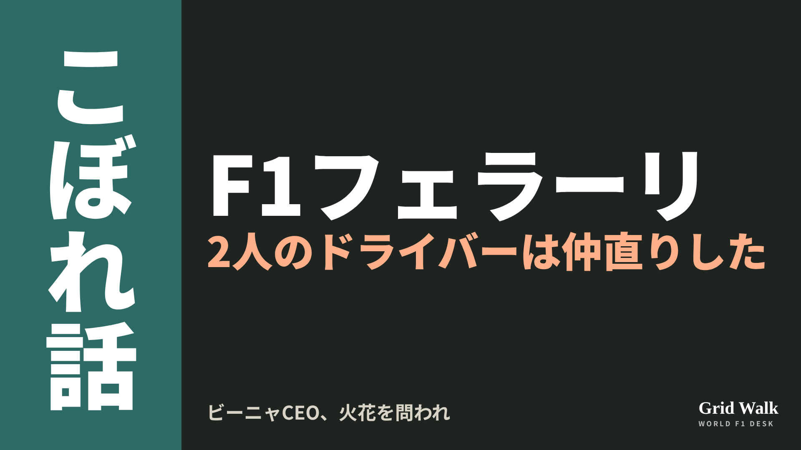<button class="cp dl" data-img="img/x_vigna-leclerc-hamilton-peace-20261127.png" data-name="x_vigna-leclerc-hamilton-peace-20261127.png">ダウンロード</button></li>
<li class="st"><div class="hd"><b>① noteをシェアするときの文</b></div><div class="bx" id="p4x0">フェラーリのビーニャCEOが、2人のドライバーの最近の火花について「2人のドライバーは仲直りした」。伊クアトロルオーテが伝えました。どの件の話かは書かれていません。noteにまとめました #F1jp #フェラーリ</div><button class="cp" data-plain="p4x0">コピー</button></li>
<li class="st"><div class="hd"><b>② ①への返信</b></div><div class="bx" id="p4x1">ほかの海外記事も読みたい方は、F1 Grid Walkへ。
https://f1gridwalk.github.io/lens/vigna-leclerc-hamilton-peace-20261127/?utm_source=x&amp;utm_campaign=vigna-leclerc-hamilton-peace-20261127</div><button class="cp" data-plain="p4x1">コピー</button></li>
<li class="st"><div class="hd"><b>③ ②への返信</b></div><div class="bx" id="p4x2">毎日の海外F1ニュースは、日本語でこちらにまとめています。
https://f1gridwalk.github.io/</div><button class="cp" data-plain="p4x2">コピー</button></li>
</ol></section><section class="part" id="p5"><h2><span class="tag">OFF GRID</span>ルクレールの心理コーチ「鶏小屋に雄鶏が2羽」　フェラーリの2人を読む</h2><p class="sub">サイトに公開：01:54</p><ol class="steps">
<li class="st im"><div class="hd"><span class="no">1</span><b>見出し画像</b><em>画像</em></div>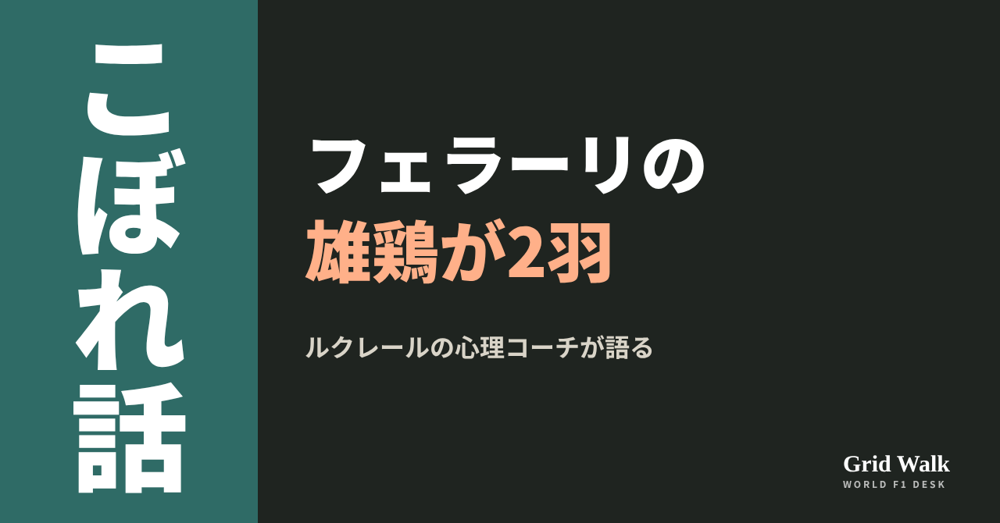<button class="cp dl" data-img="img/leclerc-coach-two-roosters-20261127.png" data-name="leclerc-coach-two-roosters-20261127_見出し画像.png">ダウンロード</button></li>
<li class="st"><div class="hd"><span class="no">2</span><b>タイトル</b></div><div class="bx" id="p5t">ルクレールの心理コーチ「鶏小屋に雄鶏が2羽」　フェラーリの2人を読む</div><button class="cp" data-plain="p5t">タイトルをコピー</button></li>
<li class="st"><div class="hd"><span class="no">3</span><b>本文</b></div><div class="bx tall" id="p5r"><p>ラスベガスGPでフェラーリのシャルル・ルクレールがルイス・ハミルトンに接触した件は、カタールGPを前にしても話題が続いています。ドイツのMotorsport-Total.comは11月26日、ルクレールを若いころから見てきた、フォーミュラ・メディスンのスポーツ医で心理コーチ、リッカルド・チェッカレッリに話を聞きました。</p><p>元の記事へのリンクと、ラスベガスの接触の経緯を書いたコラムはサイトで → <a href="https://f1gridwalk.github.io/lens/leclerc-coach-two-roosters-20261127/?utm_source=note&amp;utm_campaign=leclerc-coach-two-roosters-20261127">https://f1gridwalk.github.io/lens/leclerc-coach-two-roosters-20261127/?utm_source=note&amp;utm_campaign=leclerc-coach-two-roosters-20261127</a></p><p>フェラーリの中の事情は知らないので推測しかできない、と断ったうえで、チェッカレッリは2人の立ち位置の違いから話し始めます。</p><h2>8年いる人と、2年目の人</h2><blockquote><p>「シャルルはフェラーリで育ち、8年前からスクーデリアの一員だ。だから、ミスをしたときに少しかばわれるのは自然なことだ」（チェッカレッリ、Motorsport-Total.com／ドイツ）</p></blockquote><p>一方のハミルトンについては、チームに来てまだ2年で、フェラーリが育てた選手ではないと話しました。力ではなく感情の話だとして、こう続けます。</p><blockquote><p>「ルイスは、フェラーリのファンやフェラーリの周りに受け入れてもらうのに、より苦労しているように見える」（同）</p></blockquote><p>チェッカレッリが重ねたのは、2007年のマクラーレンです。新人のハミルトンが、2度の王者フェルナンド・アロンソと組んだ年でした。ロン・デニスのマクラーレンは中立ではなかったといいます。</p><blockquote><p>「チームはハミルトンを全面的に支えていた」「今起きていることの、ほぼ鏡写しだ」（同）</p></blockquote><h2>確かめられること</h2><p>9月のイタリアGPでは、1周目の2コーナーに2台が並んで入り、ハミルトンがグラベルに出ました。F1公式サイトによると、ルクレールは接触があったかどうかもわからないと話しています。ルクレールは2周目にバリアに当たってレースを終えました。11月1日のメキシコシティGPの1周目は、2台が4コーナーでともにコースを外れましたが、接触はしていません。FIAのスチュワードは、ルクレールがコースの外で前に出たとして5秒加算としました（読み解き https://f1gridwalk.github.io/topics/vasseur-from-the-first-straight-line/ ）。</p><p>Motorsport-Total.comによると、サンパウロGPではフレデリック・バスール代表が2人と話し合い、全員が前向きな場だったと話していました。その次のラスベガスGPで、ルクレールはハミルトンに当たってスピンさせ、F1公式の結果では接触を起こしたとして10秒加算。ハミルトンは7位、ルクレールは10位でした。経緯はコラム https://f1gridwalk.github.io/lens/ferrari-leclerc-hamilton-contact-20261122/ で。</p><p>チェッカレッリは、ルクレールがミスをしたのならチームの中で話し合うべきだと話しています。</p><h2>どちらも自分が1番だと思っている</h2><p>ただ、フェラーリは解決策を見つけなければならない、とチェッカレッリは言います。</p><blockquote><p>「2人はもう、明らかに妥当な線を越えている」「2人が求めているのは、チームの中での主導権だ」「スクーデリアのイメージをもてあそびすぎている」（同）</p></blockquote><p>チェッカレッリは2人を「鶏小屋に雄鶏が2羽」とたとえ、どちらも自分が1番だと思っていると見ます（同）。勝てばチームは少し落ち着くものの、それで2人の違いが消えるとは思わない、とも話しました。</p><blockquote><p>「そうでなかったら困る。それは、勝つために戦う意欲をなくしたということだから」（同）</p></blockquote><p>F1公式の順位では、フェラーリはコンストラクターズ2位の517点で、3位のレッドブルは440点です。残りはカタールとアブダビの2戦です。記事の要約は https://f1gridwalk.github.io/news/de-motorsport-total-ferrari-two-roosters/ で。</p><p>編集部としては、ルクレールをよく知る人が、かばう話だけで終わらせず、2人とも線を越えたと言い切ったところに重みがあると見ています。残りの2戦は、バスール代表が2人の争い方をどう扱うかを見る場になりそうです。</p><p><strong>1番を譲らない2人を、チームは同じように扱うべきだと思いますか？</strong></p><p>━━━━━━━━━━</p><p><strong>F1 Grid Walk では、世界のF1ニュースを毎日日本語でまとめています。</strong></p><p>海外の記事の要約を、毎日載せています。</p><p><a href="https://f1gridwalk.github.io/">https://f1gridwalk.github.io/</a></p><p>ほかの海外記事も読みたい方は、F1 Grid Walkへ。</p><p><a href="https://f1gridwalk.github.io/lens/leclerc-coach-two-roosters-20261127/">https://f1gridwalk.github.io/lens/leclerc-coach-two-roosters-20261127/</a></p><p>━━━━━━━━━━</p><p><a href="https://www.motorsport-total.com/formel-1/news/zwei-haehne-im-huehnerstall-was-hinter-dem-ferrari-konflikt-steckt-26112607">出典：Motorsport-Total.com（ドイツ）</a></p><p><a href="https://www.formula1.com/en/latest/article/leclerc-explains-monza-crash-as-he-reacts-to-way-too-close-hamilton-battle.5tBJS6iY8muL6Um6cgcnvS">出典：F1公式サイト（イギリス）</a></p><p><a href="https://www.fia.com/system/files/decision-document/2026_mexico_city_grand_prix_-_infringement_-_car_16_-_left_the_track_and_gained_a_lasting_advantage.pdf">出典：FIA（国際）</a></p><p><a href="https://www.formula1.com/en/results/2026/races/1300/las-vegas/race-result">出典：F1公式サイト（イギリス）</a></p><p><a href="https://www.formula1.com/en/results/2026/team">出典：F1公式サイト（イギリス）</a></p><p><a href="https://www.formula1.com/en/racing/2026">出典：F1公式サイト（イギリス）</a></p></div><button class="cp" data-rich="p5r">本文をコピー</button></li>
<li class="st"><div class="hd"><span class="no">4</span><b>ハッシュタグ</b></div><div class="bx" id="p5h">#F1 #F1jp #フェラーリ #ルクレール #ハミルトン #バスール #カタールGP #F1こぼれ話 #OFFGRID</div><button class="cp" data-plain="p5h">タグをコピー</button></li>
</ol><h3 class="xh">X</h3><ol class="steps">
<li class="st im"><div class="hd"><b>X用の画像</b><em>画像</em></div>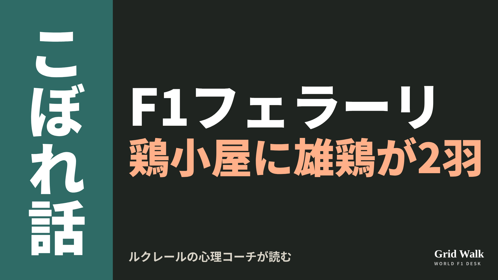<button class="cp dl" data-img="img/x_leclerc-coach-two-roosters-20261127.png" data-name="x_leclerc-coach-two-roosters-20261127.png">ダウンロード</button></li>
<li class="st"><div class="hd"><b>① noteをシェアするときの文</b></div><div class="bx" id="p5x0">ルクレールを少年期から見てきた心理コーチが、ハミルトンとの関係を「鶏小屋に雄鶏が2羽」と表現。独Motorsport-Total.comの取材に答えました。noteにまとめました #F1jp #ルクレール #フェラーリ</div><button class="cp" data-plain="p5x0">コピー</button></li>
<li class="st"><div class="hd"><b>② ①への返信</b></div><div class="bx" id="p5x1">ほかの海外記事も読みたい方は、F1 Grid Walkへ。
https://f1gridwalk.github.io/lens/leclerc-coach-two-roosters-20261127/?utm_source=x&amp;utm_campaign=leclerc-coach-two-roosters-20261127</div><button class="cp" data-plain="p5x1">コピー</button></li>
<li class="st"><div class="hd"><b>③ ②への返信</b></div><div class="bx" id="p5x2">毎日の海外F1ニュースは、日本語でこちらにまとめています。
https://f1gridwalk.github.io/</div><button class="cp" data-plain="p5x2">コピー</button></li>
</ol></section><section class="part" id="p6"><h2><span class="tag">OFF GRID</span>シュミッツ「力のかぎりの走りをする」　フェルスタッペンで変わるピット判断</h2><p class="sub">サイトに公開：01:52</p><ol class="steps">
<li class="st im"><div class="hd"><span class="no">1</span><b>見出し画像</b><em>画像</em></div>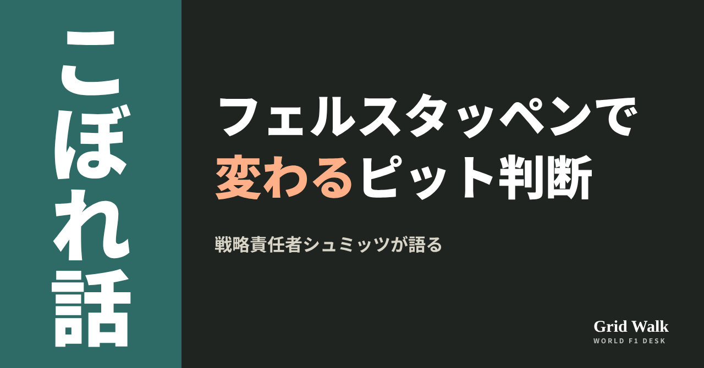<button class="cp dl" data-img="img/schmitz-verstappen-factor-20261127.png" data-name="schmitz-verstappen-factor-20261127_見出し画像.png">ダウンロード</button></li>
<li class="st"><div class="hd"><span class="no">2</span><b>タイトル</b></div><div class="bx" id="p6t">シュミッツ「力のかぎりの走りをする」　フェルスタッペンで変わるピット判断</div><button class="cp" data-plain="p6t">タイトルをコピー</button></li>
<li class="st"><div class="hd"><span class="no">3</span><b>本文</b></div><div class="bx tall" id="p6r"><p>セーフティカーが出た瞬間、ピットに入るか、コースにとどまるか。レッドブルのレース戦略の責任者ハンナ・シュミッツは、その判断がマックス・フェルスタッペンが乗っているとどう変わるのかを、F1公式のポッドキャスト F1 Explains で話しました。11月20日に公開された回です。イタリアのFormula1.itが11月26日に伝えています（サイトの要約は https://f1gridwalk.github.io/news/it-formula1it-schmitz-verstappen-factor/ ）。</p><p>元の記事へのリンクと、セーフティカーの決まりの解説はサイトで → <a href="https://f1gridwalk.github.io/lens/schmitz-verstappen-factor-20261127/?utm_source=note&amp;utm_campaign=schmitz-verstappen-factor-20261127">https://f1gridwalk.github.io/lens/schmitz-verstappen-factor-20261127/?utm_source=note&amp;utm_campaign=schmitz-verstappen-factor-20261127</a></p><blockquote><p>「彼はいつも全力を出し、力のかぎりの走りをする」（シュミッツ、F1 Explains。Formula1.itのイタリア語訳から／イタリア）</p></blockquote><h2>譲った順位を取り返せるか</h2><p>記事によると、セーフティカーの間にピットに呼ぶと、順位を1つ失うことがあります。それでも、再スタートのあとにコース上で取り返せると分かっているドライバーなら、呼ぶ判断はずっと楽になる。シュミッツは、この例を使って聞き手に説明したといいます。セーフティカーと再スタートの決まりは、用語集 https://f1gridwalk.github.io/deep/rules/safety-car/ と https://f1gridwalk.github.io/deep/rules/safety-car-restart/ で。</p><p>記事は、フェルスタッペンの安定感が、戦略担当にとって選べる手を広げると書いています。ピットに入って得をするには、外に残った車を抜かなければならない。そんな作戦も、フェルスタッペンなら本気で考えられるというのです。新しいタイヤにどれだけの価値があるかは、シミュレーターで計算できます。それでも、実際に抜くのはドライバーだ、と記事は書いています。</p><h2>無線では、はっきり言う</h2><p>シュミッツが評価するもう1つの点は、フェルスタッペンの無線を聞いたことがある人ならおなじみの性格だと、記事は書きます。自分の意見をはっきり持ち、それを口にすることです。記事によると、このやりとりが特に役に立つのは、ドライバーが車の損傷を感じたときや、タイヤが思ったより早く傷んできたと感じたときです。そんなとき、フェルスタッペンは戦略担当からの答えを、できれば次にピットの前を通るまでに、騒ぎ立てずに待っているといいます。チーム無線の決まりは https://f1gridwalk.github.io/deep/rules/team-radio/ で。</p><p>第21戦ラスベガスGPでも、終盤の無線のやりとりが注目されました。F1公式の結果では、優勝はフェルスタッペンです。残り2周の無線は、コラム https://f1gridwalk.github.io/lens/redbull-radio-lead-choice-20261126/ で紹介しています。</p><h2>戦略は、乗る人で変わる</h2><p>Formula1.itの記事は、フェラーリのファンに向けた書き出しで始まります。雨やセーフティカーのたびに、ファンはピットに入るか残るか、どちらを1周後に後悔するのかと考えてきた。そんな日曜日が何年も続いて、ネットにはマラネロの戦略担当をからかうミームがあふれた、と書いています。</p><p>編集部としては、シュミッツの話は、戦略が計算だけでは決まらないことをよく表していると見ています。シミュレーターが同じ数字を出しても、抜ける自信のあるドライバーなら、順位を一度手放す手も選択肢になるからです。開発の向きもエースの求めるものに向かう、という元代表ホーナーの話（コラム https://f1gridwalk.github.io/lens/horner-verstappen-special-ability-20261126/ ）とも重なります。今週末は、11月27〜29日の第22戦カタールGPです。</p><p><strong>セーフティカーが出たとき、あなたが戦略担当なら、ひいきのドライバーをピットに呼びますか？ それとも順位を守らせますか？</strong></p><p>━━━━━━━━━━</p><p><strong>F1 Grid Walk では、世界のF1ニュースを毎日日本語でまとめています。</strong></p><p>海外の記事の要約を、毎日載せています。</p><p><a href="https://f1gridwalk.github.io/">https://f1gridwalk.github.io/</a></p><p>ほかの海外記事も読みたい方は、F1 Grid Walkへ。</p><p><a href="https://f1gridwalk.github.io/lens/schmitz-verstappen-factor-20261127/">https://f1gridwalk.github.io/lens/schmitz-verstappen-factor-20261127/</a></p><p>━━━━━━━━━━</p><p><a href="https://www.formula1.it/news/34235/1/hannah-schmitz-spiega-il-fattore-verstappen-nelle-strategie-red-bull">出典：Formula1.it（イタリア）</a></p><p><a href="https://www.formula1.com/en/results/2026/races/1300/las-vegas/race-result">出典：F1公式サイト（イギリス）</a></p><p><a href="https://www.formula1.com/en/racing/2026">出典：F1公式サイト（イギリス）</a></p></div><button class="cp" data-rich="p6r">本文をコピー</button></li>
<li class="st"><div class="hd"><span class="no">4</span><b>ハッシュタグ</b></div><div class="bx" id="p6h">#F1 #F1jp #レッドブル #フェルスタッペン #シュミッツ #セーフティカー #F1戦略 #カタールGP #F1こぼれ話 #OFFGRID</div><button class="cp" data-plain="p6h">タグをコピー</button></li>
</ol><h3 class="xh">X</h3><ol class="steps">
<li class="st im"><div class="hd"><b>X用の画像</b><em>画像</em></div>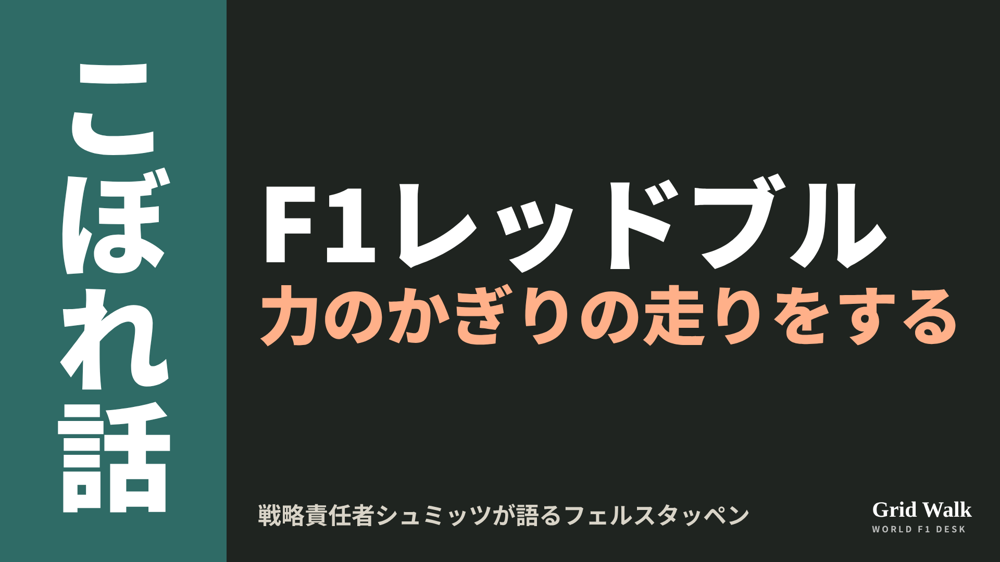<button class="cp dl" data-img="img/x_schmitz-verstappen-factor-20261127.png" data-name="x_schmitz-verstappen-factor-20261127.png">ダウンロード</button></li>
<li class="st"><div class="hd"><b>① noteをシェアするときの文</b></div><div class="bx" id="p6x0">レッドブルの戦略責任者ハンナ・シュミッツが、フェルスタッペンだからできるピット判断を語りました。セーフティカーの間に呼べるのは、抜き返せると分かっているから。noteにまとめました #F1jp #レッドブル</div><button class="cp" data-plain="p6x0">コピー</button></li>
<li class="st"><div class="hd"><b>② ①への返信</b></div><div class="bx" id="p6x1">ほかの海外記事も読みたい方は、F1 Grid Walkへ。
https://f1gridwalk.github.io/lens/schmitz-verstappen-factor-20261127/?utm_source=x&amp;utm_campaign=schmitz-verstappen-factor-20261127</div><button class="cp" data-plain="p6x1">コピー</button></li>
<li class="st"><div class="hd"><b>③ ②への返信</b></div><div class="bx" id="p6x2">毎日の海外F1ニュースは、日本語でこちらにまとめています。
https://f1gridwalk.github.io/</div><button class="cp" data-plain="p6x2">コピー</button></li>
</ol></section><section class="part" id="p7"><h2><span class="tag">OFF GRID</span>ベアマン残留、ようやく正式決定　小松代表「自然な決断だった」</h2><p class="sub">サイトに公開：01:50</p><ol class="steps">
<li class="st im"><div class="hd"><span class="no">1</span><b>見出し画像</b><em>画像</em></div>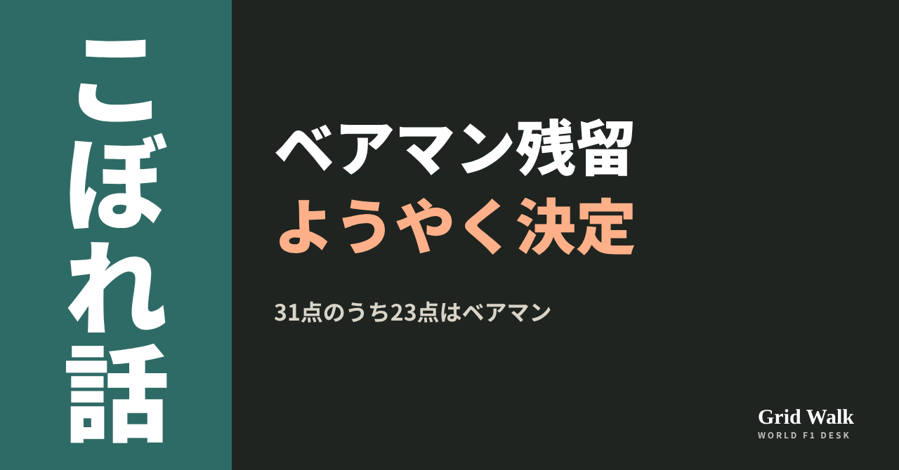<button class="cp dl" data-img="img/bearman-haas-2027-confirmed-20261127.png" data-name="bearman-haas-2027-confirmed-20261127_見出し画像.png">ダウンロード</button></li>
<li class="st"><div class="hd"><span class="no">2</span><b>タイトル</b></div><div class="bx" id="p7t">ベアマン残留、ようやく正式決定　小松代表「自然な決断だった」</div><button class="cp" data-plain="p7t">タイトルをコピー</button></li>
<li class="st"><div class="hd"><span class="no">3</span><b>本文</b></div><div class="bx tall" id="p7r"><p>ハースは11月26日、オリバー・ベアマンが2027年もチームで走ると発表しました。ハースで3年続けてのシーズンになり、チームメートはラファエル・カマラです。イギリスのPlanetF1は、この発表で2027年のF1のグリッドがすべて埋まったと伝えています。</p><p>ハースの発表と元の記事へのリンク、契約が長引いた間のコラムへの案内はサイトで → <a href="https://f1gridwalk.github.io/lens/bearman-haas-2027-confirmed-20261127/?utm_source=note&amp;utm_campaign=bearman-haas-2027-confirmed-20261127">https://f1gridwalk.github.io/lens/bearman-haas-2027-confirmed-20261127/?utm_source=note&amp;utm_campaign=bearman-haas-2027-confirmed-20261127</a></p><p>ハースの公式Xは、こんな言葉で知らせました。</p><blockquote><p>「決断は下された」「オリーは2027年まで延長」（ハース公式X、PlanetF1／イギリス）</p></blockquote><h2>発表に並んだ2人の言葉</h2><p>発表には、小松礼雄代表とベアマン本人のコメントが載っています。</p><blockquote><p>「オリーと2027年も続けることは、私たちにとって自然な決断だった」「彼の成長、打ち込む姿勢、そしてコースの内外でチームにもたらす質を見てきた」（小松礼雄代表、ハース公式／アメリカ）</p></blockquote><blockquote><p>「このチームを前へ引っぱっていくのに、彼以上の人はいないと私は思う」（小松礼雄代表、ハース公式／アメリカ）</p></blockquote><blockquote><p>「2027年もTGRハースF1チームで続けられて、とてもうれしいのは隠すまでもない」「このチームは、僕の成長に欠かせない役割を果たしてくれた」（ベアマン、ハース公式／アメリカ）</p></blockquote><blockquote><p>「僕たちには前へ進み続けるという大きな野心があって、その仕事を引っぱっていくのが楽しみだ」（ベアマン、ハース公式／アメリカ）</p></blockquote><p>代表と本人が、そろってチームを引っぱる役の話をしています。今季限りでハースを離れるエステバン・オコンに代わって、11月からはカマラがすでに走っています。来季は、ベアマン（21歳）とカマラの2人で戦います。</p><h2>長引いたわけは書かれていない</h2><p>ハースの発表には、契約の年数や条件は書かれていません。3年連続のシーズンになる、と伝えているだけです。フェラーリの名前も出てきません。</p><p>PlanetF1は、延長は形式だけに見え、あとは両者がサインするだけだったのに、長くかかったと書いています。遅れた理由ははっきりしないとしたうえで、ベアマンのマネジメントが給料の交渉のさなかにほかのチームとも話していた、といううわさがあったと紹介しました。そして、給料をめぐるうわさは的外れだったと理解している、と伝えています。</p><p>給料の条件で話が止まっていると、ブラジルのグランデ・プレミオやドイツのMotorsport-Totalが報じていました（11月24日のコラム https://f1gridwalk.github.io/lens/bearman-haas-salary-stall-20261124/ ）。どちらの見方が近かったのかは、今回の発表からは分かりません。</p><h2>31点のうち23点</h2><p>F1公式によると、ベアマンは今季ここまで23点で、ドライバーズ選手権13位。ハースの31点のうち23点を1人で取っています。ハースはコンストラクターズ7位で、8位のアウディ（28点）とは3点差です。</p><p>今季いちばんの結果は中国GPの5位（10点）で、2025年のメキシコシティGPでは4位に入っています（F1公式）。ハースの発表は、このメキシコの4位をチームの最高成績に並ぶ結果とし、ベアマンのF1の決勝は48戦、通算71点としています。</p><p>今季の残りは、第22戦カタールGP（11月27〜29日）と第23戦アブダビGP（12月4〜6日）の2戦です。</p><p>編集部としては、発表に年数が書かれていないことより、代表と本人がそろって、チームを引っぱる役をベアマンに託す言葉を選んだことのほうが大きいと見ています。一方で、フェラーリの育成ドライバーとしての先の話には、発表は触れていません。そちらの話は、11月19日のコラム https://f1gridwalk.github.io/lens/bearman-2027-contract-wait-20261119/ で。ハースが持つとされたオプションの仕組みは https://f1gridwalk.github.io/deep/rules/contract-option/ 、サイトの要約は https://f1gridwalk.github.io/news/en-planetf1-bearman-haas-confirmed/ にあります。</p><p><strong>長い交渉のあとで決まった3年目。来季のベアマンは、ハースを引っぱる役を果たせると思いますか？</strong></p><p>━━━━━━━━━━</p><p><strong>F1 Grid Walk では、世界のF1ニュースを毎日日本語でまとめています。</strong></p><p>海外の記事の要約を、毎日載せています。</p><p><a href="https://f1gridwalk.github.io/">https://f1gridwalk.github.io/</a></p><p>ほかの海外記事も読みたい方は、F1 Grid Walkへ。</p><p><a href="https://f1gridwalk.github.io/lens/bearman-haas-2027-confirmed-20261127/">https://f1gridwalk.github.io/lens/bearman-haas-2027-confirmed-20261127/</a></p><p>━━━━━━━━━━</p><p><a href="https://www.haasf1team.com/news/tgr-haas-f1-team-confirms-ollie-bearman-2027-fia-formula-1-world-championship">出典：ハース公式（アメリカ）</a></p><p><a href="https://www.planetf1.com/news/oliver-bearman-haas-f1-2027-confirmation">出典：PlanetF1（イギリス）</a></p><p><a href="https://www.formula1.com/en/results/2026/drivers">出典：F1公式サイト（イギリス）</a></p><p><a href="https://www.formula1.com/en/results/2026/team">出典：F1公式サイト（イギリス）</a></p><p><a href="https://www.formula1.com/en/results/2026/races/1280/china/race-result">出典：F1公式サイト（イギリス）</a></p><p><a href="https://www.formula1.com/en/results.html/2025/races/1272/mexico/race-result.html">出典：F1公式サイト（イギリス）</a></p><p><a href="https://www.formula1.com/en/racing/2026">出典：F1公式サイト（イギリス）</a></p></div><button class="cp" data-rich="p7r">本文をコピー</button></li>
<li class="st"><div class="hd"><span class="no">4</span><b>ハッシュタグ</b></div><div class="bx" id="p7h">#F1 #F1jp #ハース #ベアマン #小松礼雄 #カマラ #2027年 #F1こぼれ話 #OFFGRID</div><button class="cp" data-plain="p7h">タグをコピー</button></li>
</ol><h3 class="xh">X</h3><ol class="steps">
<li class="st im"><div class="hd"><b>X用の画像</b><em>画像</em></div>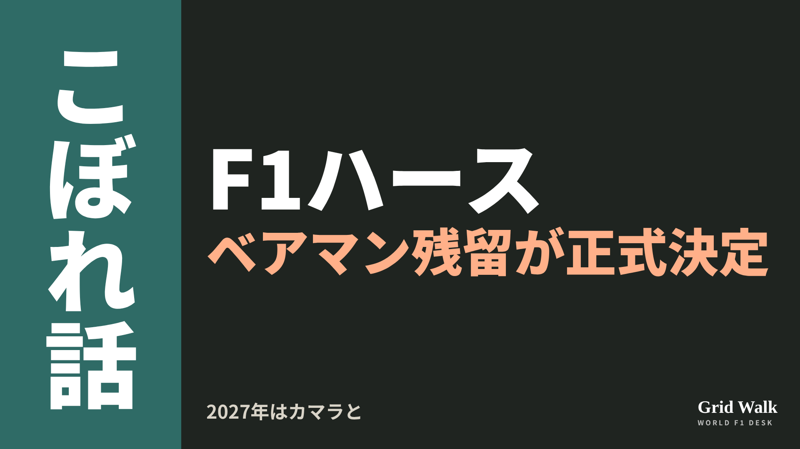<button class="cp dl" data-img="img/x_bearman-haas-2027-confirmed-20261127.png" data-name="x_bearman-haas-2027-confirmed-20261127.png">ダウンロード</button></li>
<li class="st"><div class="hd"><b>① noteをシェアするときの文</b></div><div class="bx" id="p7x0">ハースがベアマンの2027年残留を正式に発表。小松代表は「自然な決断だった」。来季はカマラと組みます。noteにまとめました #F1jp #ベアマン #ハース</div><button class="cp" data-plain="p7x0">コピー</button></li>
<li class="st"><div class="hd"><b>② ①への返信</b></div><div class="bx" id="p7x1">ほかの海外記事も読みたい方は、F1 Grid Walkへ。
https://f1gridwalk.github.io/lens/bearman-haas-2027-confirmed-20261127/?utm_source=x&amp;utm_campaign=bearman-haas-2027-confirmed-20261127</div><button class="cp" data-plain="p7x1">コピー</button></li>
<li class="st"><div class="hd"><b>③ ②への返信</b></div><div class="bx" id="p7x2">毎日の海外F1ニュースは、日本語でこちらにまとめています。
https://f1gridwalk.github.io/</div><button class="cp" data-plain="p7x2">コピー</button></li>
</ol></section></main><script>
function done(b,msg){const t=b.dataset.t||b.textContent;b.dataset.t=t;b.classList.add('ok');b.textContent=msg||'コピーしました';setTimeout(()=>{b.classList.remove('ok');b.textContent=t},2000)}
function selectEl(el){const r=document.createRange();r.selectNodeContents(el);const s=getSelection();s.removeAllRanges();s.addRange(r)}
async function rich(el,b){
  try{await navigator.clipboard.write([new ClipboardItem({'text/html':new Blob([el.innerHTML],{type:'text/html'}),'text/plain':new Blob([el.innerText],{type:'text/plain'})})]);done(b);return}catch(e){}
  selectEl(el);let ok=false;try{ok=document.execCommand('copy')}catch(e){}
  if(ok){getSelection().removeAllRanges();done(b)}else{done(b,'選択しました。コピーしてください')}}
async function plain(el,b){
  try{await navigator.clipboard.writeText(el.innerText);done(b);return}catch(e){}
  selectEl(el);let ok=false;try{ok=document.execCommand('copy')}catch(e){}
  if(ok){getSelection().removeAllRanges();done(b)}else{done(b,'選択しました。コピーしてください')}}
let dlns=null;(async()=>{try{dlns=await window.claude?.use?.("downloads")}catch(e){dlns=null}})();
async function img(src,b){
  b.dataset.t=b.dataset.t||b.textContent;
  if(!dlns){try{dlns=await window.claude?.use?.("downloads")}catch(e){}}
  if(!dlns){b.textContent='ダウンロードできませんでした';setTimeout(()=>{b.textContent=b.dataset.t},3500);return}
  try{const blob=await fetch(src).then(r=>r.blob());b.textContent='保存の確認を開いています…';
    await dlns.save({filename:b.dataset.name,data:blob});done(b,'ダウンロードしました')}
  catch(e){const c=e&&e.code;b.textContent=c==='declined'?'キャンセルしました':c==='rate_limited'?'少し待ってからもう一度押してください':'ダウンロードできませんでした';setTimeout(()=>{b.textContent=b.dataset.t},3500)}}
document.querySelectorAll('.cp').forEach(b=>b.addEventListener('click',()=>{
  if(b.dataset.rich)rich(document.getElementById(b.dataset.rich),b);
  else if(b.dataset.plain)plain(document.getElementById(b.dataset.plain),b);
  else img(b.dataset.img,b)}));
</script>